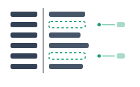
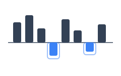
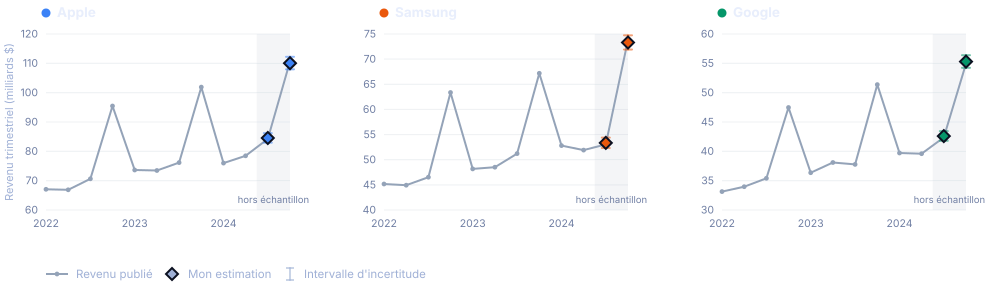

Estimer le revenu d'une entreprise à partir de données de cartes de crédit
Estimer le revenu trimestriel de trois fabricants d'électronique grand public à partir de 158 031 transactions par carte effectuées par un panel de 2 500 personnes. Erreur absolue moyenne de 0,54 % sur deux trimestres mis de côté dès le départ, alors que le banc d'essai annonçait 0,83 %.
De quoi il s'agit
Une étude de cas réalisée pour le club d'investissement PolyFinances de Polytechnique Montréal, dans le cadre de la sélection de l'équipe pour la Rotman International Trading Competition. L'énoncé : un panel de transactions par carte est fourni, et il faut en tirer le revenu trimestriel d'Apple, de Samsung et de Google avant la publication de ces trimestres.
Les données sont synthétiques. Elles ont été générées et fournies par le club, et elles ne décrivent pas les véritables entreprises. Les chiffres de cette page ne disent rien d'Apple, de Samsung ni de Google. Ce qui est réel, c'est la méthode : le même problème de calibration d'un panel vers une population que traitent les équipes de données alternatives.
Comment le travail a été évalué
Deux trimestres ont été mis de côté avant toute modélisation, de sorte que la comparaison finale ne pouvait être faite qu'une seule fois. Un banc d'essai glissant sur les trimestres antérieurs a fixé l'attente au préalable.
Ce qui clochait dans les données
L'essentiel du travail est là. Trois défauts avaient été glissés dans le fichier de transactions, et chacun fausse l'estimation d'une manière différente. Les repérer valait davantage que tous les choix de modélisation faits ensuite.
Des montants enregistrés en cents
Environ une transaction Apple sur vingt est stockée en cents plutôt qu'en dollars, et paraît donc cent fois trop élevée. Mesuré sur le fichier : 4,76 % des lignes Apple, contre 0,62 % pour Samsung et 0,56 % pour Google. C'est ce qui en fait un piège, puisque le défaut touche presque uniquement une entreprise et ne fausse que son total.

Un fournisseur qui disparaît
Le champ du fournisseur est vide sur 36,3 % des lignes Pixel, soit 19 033 sur 52 501. Supprimer ces lignes ferait perdre le tiers des ventes de Google. Le nom du produit, lui, est toujours présent : le fournisseur peut donc être reconstitué au lieu d'être écarté.

Des montants négatifs
5 420 lignes, soit 3,4 % du fichier, portent un montant négatif, jusqu'à -127 859. Un remboursement a sa place dans un chiffre de revenu, un négatif de cette ampleur n'en a pas, et il faut distinguer les deux plutôt que de tout additionner.
Un modèle volontairement petit
Le revenu vaut approximativement les ventes du panel multipliées par un ratio propre à chaque entreprise, puisque le panel représente une fraction fixe du marché. L'estimation finale fait la moyenne de deux façons d'obtenir ce ratio : la moyenne sur tous les trimestres passés, et le ratio du même trimestre un an plus tôt, qui porte la saisonnalité.
Rien de plus élaboré n'était justifié. Avec douze trimestres par entreprise, un modèle plus gros ajusterait du bruit.
Le nettoyage validé sans la réponse
Chaque décision de nettoyage a été vérifiée sur la seule année 2022, où le revenu publié est exactement proportionnel aux ventes nettoyées du panel. Retirer n'importe quelle correction brise cette proportionnalité, ce qui fournit un test qui ne touche jamais aux trimestres réservés.
Ce point compte plus qu'il n'y paraît. Ajuster le nettoyage sur les trimestres que l'on cherche à prédire est la façon la plus simple de produire un chiffre qui a fière allure et ne veut rien dire.
Le résultat
Le revenu publié par trimestre, avec les deux trimestres réservés ombrés et l'estimation marquée. Le pic du quatrième trimestre correspond au temps des Fêtes, et c'est précisément ce qu'une simple tendance manquerait.

| Entreprise | Trimestre | Estimation (G$) | Intervalle | Réel | Erreur |
|---|---|---|---|---|---|
| Apple | 2024T3 | 84,54 | 82,93 à 86,21 | 84,25 | +0,34 % |
| Apple | 2024T4 | 110,06 | 107,97 à 112,24 | 110,61 | -0,50 % |
| Samsung | 2024T3 | 53,34 | 52,32 à 54,39 | 53,05 | +0,54 % |
| Samsung | 2024T4 | 73,30 | 71,91 à 74,75 | 73,83 | -0,72 % |
| 2024T3 | 42,60 | 41,79 à 43,45 | 42,38 | +0,52 % | |
| 2024T4 | 55,29 | 54,24 à 56,38 | 54,93 | +0,65 % |
Les intervalles valent plus ou moins deux erreurs-types du banc d'essai. Les six valeurs réelles s'y trouvent.
Ce que disent les chiffres
Les trimestres réservés étaient les plus faciles
Le banc d'essai glissant, sur 18 prévisions, donne 0,83 % en moyenne. Les deux trimestres réservés arrivent à 0,54 %. La lecture honnête est que ces derniers trimestres se sont avérés plus cléments que la moyenne, et non que la méthode s'est améliorée. C'est 0,83 % qu'il faut retenir.
Ce sont les données de cartes qui travaillent
Un modèle de référence qui ignore les transactions et se contente de prolonger le revenu publié est environ quatre fois moins précis. Cet écart est la seule chose qui justifie de constituer le panel, et c'est la comparaison qui mérite d'être rapportée.
Une correction porte presque tout
En annulant les décisions une à une : laisser le défaut des cents en place fait passer l'erreur de 0,54 % à 7,18 %, soit plus de dix fois. Les autres corrections pèsent beaucoup moins.
Pourquoi ces deux défauts se comportent si différemment
Les fournisseurs manquants ne coûtent presque rien, alors que le défaut des cents coûte tout, et la raison n'est pas que l'un serait plus gros que l'autre. Un défaut stable d'un trimestre à l'autre, comme la même proportion de lignes Pixel sans fournisseur chaque trimestre, est absorbé lors de la calibration du ratio : il décale les ventes du panel d'un facteur constant, que le ratio annule discrètement. Un défaut dont l'ampleur change d'un trimestre à l'autre ne s'annule pas, car aucun ratio unique ne peut absorber une cible mouvante. Seul le nettoyage élimine celui-là.